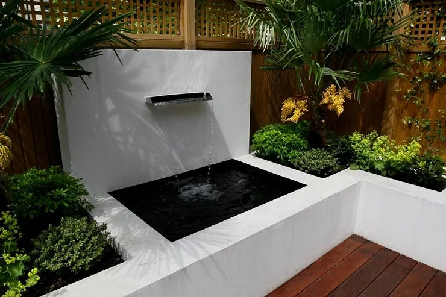

Cute Fish
Provide Live and Quality Fish
Provide Live and Quality Fish
1. Desain minimalis dan dipadukan dengan elemen bebatuan
2. Kolam ikan bergaya oriental yang mengambil inspirasi dari alam
3. Modern dan sederhana tanpa banyak dekorasi
4. Perpaduan antara kolam dan akuarium
5. Desain kolam ikan yang menggunakan batu sebagai fokusnya

6. Kolam bertingkat memberikan nuansa yang hidup sekaligus modern
7. Memadukan kolam ikan dengan dek kayu
8. Kolam dalam ruangan ini membuat ruangan lebih hidup